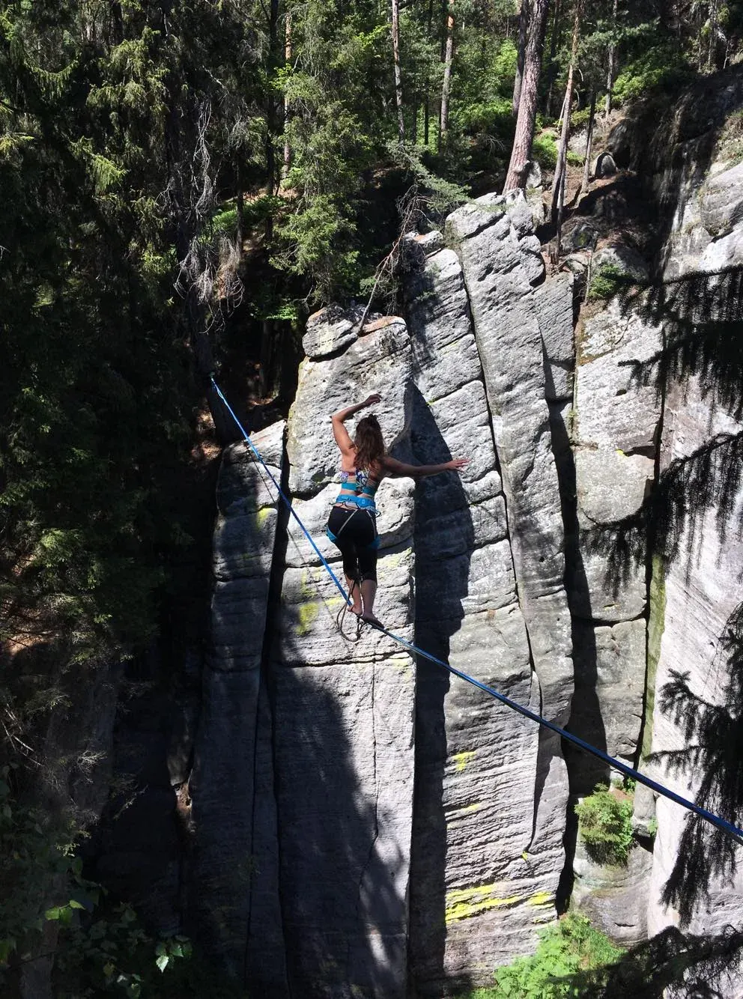
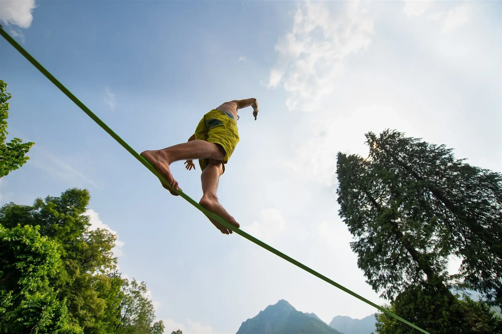
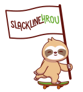

Co je slackline a proč si ji lidé zamilovali?
Na první pohled jednoduchý popruh natažený mezi dvěma body. Ve skutečnosti aktivita, která rozvíjí rovnováhu, soustředění, koordinaci i sebevědomí.


Co je slackline?
Slackline je balanční aktivita, při které se chodí po pružném popruhu napnutém mezi dvěma body.
Nejde o výkon ani soutěž. Každý krok je malou výzvou, která zapojuje celé tělo i mysl. Právě proto je slackline tak oblíbená ve školách, na festivalech, sportovních dnech i firemních akcích.
Není potřeba žádná předchozí zkušenost ani speciální fyzická kondice. První krok může udělat téměř každý.
Přínosy slackline
-
Rovnováha a stabilitaZapojení hlubokého stabilizačního systému a práce s těžištěm.
-
Vnímání vlastního tělaLepší orientace v prostoru a uvědomění si pohybu.
-
Zklidnění mysliNa lajně se člověk přirozeně učí být přítomný a vnímat okamžik.
-
TrpělivostNa slackline nejde nic uspěchat. Každý krok má svůj čas.
-
Posouvání limitůNové výzvy, společenská aktivita a pobyt v přírodě.

Giboardy a jejich kouzlo
Nemáte vhodné místo pro natažení slackline? Nevadí.
Giboard je dřevěná balanční deska s krátkou slackline, která umožňuje bezpečný trénink rovnováhy téměř kdekoliv. Díky kompaktním rozměrům ji lze využít venku i uvnitř.
Co vše lze s giboardy dělat?
- ✓ Balanční hry
- ✓ Pohybové výzvy
- ✓ Koordinační cvičení
- ✓ Týmové aktivity
- ✓ Soutěže
- ✓ Rozvoj stability